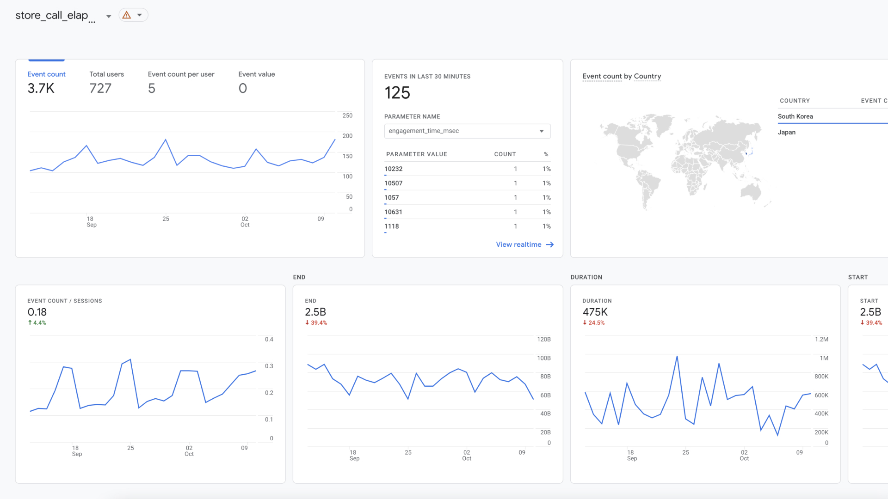
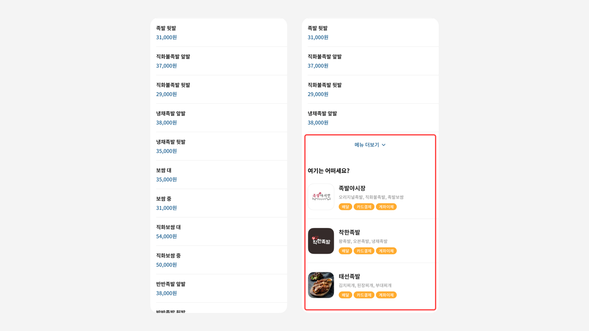
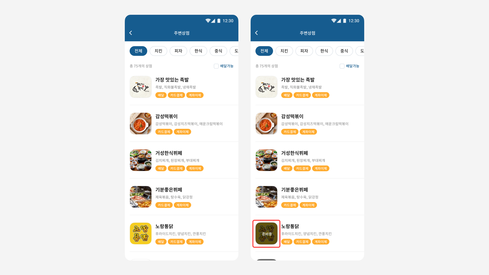

코인은 한국기술교육대학교 학생들의 커뮤니티 플랫폼 서비스로 주변상점, 버스/교통, 시간표 등 학생들에게 필요한 다양한 서비스를 제공하고 있습니다. 그 중 학생들이 음식을 주문할 수 있도록 학교 주변의 다양한 상점 정보를 제공하고 있는 주변상점 서비스의 사용성을 개선했습니다.
불편한 주문과정
주변상점의 상점 정보들은 잘 정리가 되어있지만 학교생활을 하며 만나본 실제 사용자들은 여전히 원하는 상점과 메뉴 정보를 찾고 음식을 주문하는 과정에서 많은 어려움을 느끼고 있었습니다.
개선 전 주변상점 화면
가설과 KPI설정
가설 설정
사용자가 원하는 정보를 빠르게 찾는다면 음식 주문까지의 소요시간이 단축될 것이다.
KPI 설정
사용자가 주변상점 페이지에서 전화하기 버튼을 누르기까지의 총 소요시간(태스크 달성 시간)
KPI 측정
Firebase 툴을 이용하여 이벤트를 설정하고 다음과 같은 고려 사항과 함께 약 한 달간 사용자 데이터를 수집했습니다.
주변상점 페이지에서 다른 서비스(혹은 메인) 페이지로 이동하는 경우는 제외
상세 페이지에서 다른 상세 페이지로 이동하는 경우는 이동시간까지 모두 측정에 포함
최종 결과는 사용자의 모든 측정값의 평균값으로 계산
경쟁사 분석
비슷한 서비스를 하고 있는 배달 앱의 음식을 주문하는 과정을 직접 경험해보고 장단점과 차별성을 분석하여 서비스 개선에 참고했습니다.

배달의 민족
장점
음식점 목록에서 쿠폰, 포장과 같은 라벨을 제공하여 간편하게 정보를 확인할 수 있다.
장점
중복되는 같은 음식점이 다시 리스트업 되어 사용자가 선택을 하는 과정에 혼동을 준다.
차별점
포장/방문주문 탭을 개별적으로 구성하여 코로나 상황에 대응할 수 있는 서비스를 제공하고있다.
요기요
장점
할인되는 음식점들을 목록 상위 순서로 배치하여 사용자들의 접근성을 높였다.
단점
목록을 필터링할 수 있는 UI가 작고 옵션이 과도하게 많아 오히려 사용자들에게 불편함을 줄 수 있다.
차별점
사용자가 원하는 음식점을 쉽게 찾을 수 있도록 홈 화면에 다양한 주제로 상점들을 구성하였다.
두가지 사용자 유형
서비스를 개선하기 앞서 주변상점을 이용하는 사용자를 두 가지의 유형으로 나누고 각각의 사용자들이 필요한 경험이 무엇인지 고민했습니다.
명확히 찾는 상점이 있는 경우
원하는 상점이 있어 빠르게 그 상점을 찾고 음식을 주문하길 원하는 사용자 유형
명확히 찾는 상점 없이 둘러보는 경우
명확히 찾는 상점 없이 여러 상점들을 둘러보고 음식을 주문하길 원하는 사용자 유형
상점 검색 (명확히 찾는 상점이 있는 경우)
명확하게 찾는 상점이 있는 사용자의 경우, 그들에게 무엇보다 중요한 것은 빠르게 원하는 상점 정보를 얻는 것이라고 생각했습니다. 그렇기 때문에 가장 직접적이며 직관적으로 탐색할 수 있는 검색 기능을 추가했습니다. 상점 검색을 누르면 별도의 검색 페이지로 이동하며 실시간 검색을 지원하여 사용자들이 원하는 상점을 빠르게 찾을 수 있습니다.
검색 기능 추가
상점 추천 (명확히 찾는 상점 없이 둘러보는 경우)
명확하게 찾는 상점이 없는 사용자의 경우, 그들에게는 원하는 메뉴를 찾으며 여러 상점들을 편하게 둘러볼 수 있는 것이 중요하다고 생각했습니다. 개선된 상세 페이지에서는 메뉴소개 하단에 [메뉴 더보기] 버튼으로 메뉴를 일부 접고, 같은 카테고리의 다른 상점들을 사용자들에게 추천해 다른 상점을 둘러보는 플로우를 단축시켰습니다.
상점 추천 추가
전단지 이미지
사용자들은 정리되어 있는 메뉴와 함께 직관적으로 바로 확인할 수 있는 전단지를 보고싶어하는 니즈가 있었습니다. 이를 해결하기 위해 동아리원들과 함께 직접 주변 상점들의 전단지 이미지를 수집하고 메뉴정보와 별도로 이를 확인할 수 있는 UI를 제공했습니다. 사용자들은 썸네일을 눌러 이미지를 크게 볼 수 있고 확대, 축소 또한 가능합니다.

전단지 탭 추가
개점 상태
사용자가 상점을 찾아 상세 페이지로 이동했지만, 아직 그 시간에 개점하지 않아 주문을 하지 못하고 이전 화면으로 되돌아오는 경우가 있었습니다. 이런 불필요한 플로우를 없애기 위해 현재 시간을 기준으로 아직 개점하지 않은 상점에 대해서는 ‘준비중’이라는 표시와 함께 목록 최하단으로 정렬했습니다.
개점 상태 표시 추가
전화하기 버튼
사용자들은 메뉴를 보기 위해 화면 하단까지 스크롤을 내리고 주문을 하려면 다시 화면 상단까지 스크롤을 올려 전화하기 버튼을 눌러야만 했습니다. 사용자의 이러한 불편함을 해소하고 조금 더 빠르게 주문하기 위해 전화하기 버튼을 플로팅 액션 버튼의 형태로 화면 하단에 위치를 고정시켰습니다.

전화하기 버튼 변경
개선 후 최종 디자인
상점 검색, 상점 추천, 전단지 이미지, 개점 상태, 전화하기 버튼 등 총 5가지 부분을 개선하여 최종적으로 다음과 같은 디자인을 앱에 업데이트하여 배포했습니다.
가설 검증
디자인 개선에 앞서 설정한 가설(사용자가 원하는 정보를 빠르게 찾는다면 음식 주문까지의 소요시간이 단축될 것이다.)을 검증하기 위해 개선 전과 개선 후 각각의 KPI(태스크 달성 시간)를 관찰했습니다. 그 결과, 사용자들의 음식 주문 시간은 약 44% 정도 유의미하게 감소했고 앞서 설정한 가설을 검증할 수 있었습니다.